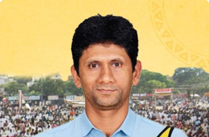
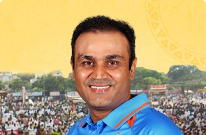
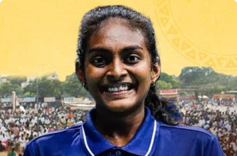
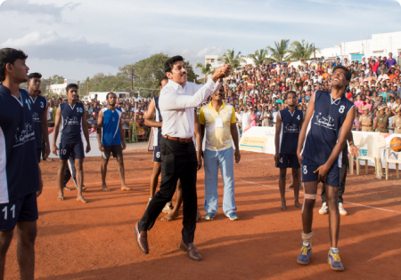

Throwball Training Tips
CELEBRITIES
Share

“Gramotsavam is a great opportunity for the sportsmen and women of rural India. Make use of it.”
-Venkatesh Prasad, Former Indian Cricketer, Cricket Coach & Arjuna Award Winner

“What I witnessed here makes me so proud of Bharat’s sporting spirit. I hope Gramotsavam inspires everyone to play a sport.”
-Virender Sehwag, Former Indian Cricketer, Padma Shri & Arjuna Award Winner

“Gramotsavam prepares rural players to participate in national and international competitions and empowers women in sports.”
-Thulasimathi Murugesan, Indian Paralympic Badminton Medalist
“Everyone played exceptionally well. My best wishes to all of you to win medals for India one day.”
-Mariappan Thangavelu, Indian Paralympic High Jump Medalist

"Reflecting on why Gramotsavam is so important, I recalled Mahatma Gandhi's saying, ‘India lives in its villages.'”
-S. V. Balasubramaniam, Founder of Bannari Amman Group
TALES OF
Transformation
Frequently Asked Questions
"Gramotsavam" translates to "celebration of village life." Isha Gramotsavam is an annual sports festival that promotes sporting culture among rural India and showcases the essence of rural life through an elaborate display of rural games, art, drama, dance, music and food.
Gramotsavam will take place from August 2025 to September 2025.
Register your team for one of the sports and compete.
Volunteer for the event.
Attend the finals at Isha Yoga Center Coimbatore.
A cluster consists of a maximum of 30 teams from a district. The winning team and runner-up from each cluster will progress to the divisional matches. These matches will include a mix of district teams within a state.
The finals will take place in front of Adiyogi at Isha Yoga Center Coimbatore.
Yes, the finals will be livestreamed on YouTube. Check out the Gramotsavam 2023 livestream here: https://www.youtube.com/watch?v=1mF7Ob7vTzA
Lunch will be provided to participating teams on match days at the event venue.
Yes, travel allowance will be provided to participating teams from the divisional matches (second-level) onward.
There are no prerequisites to participate, but one must register in advance. Registration is free. To register, click here: <registration link> Additionally, those who have not attended any prior programs at Isha are also welcome to participate.
The minimum age for players is 13. Additionally, only a maximum of three players below 21 years of age are allowed in a team. One physical education trainer (PET) can participate in one team. There is no maximum age limit as long as one is physically fit.
The following players cannot participate in the event:
a. International players: Played against other international teams on behalf of the Indian team.
b. National players: Played against other Indian state teams on behalf of the belonging state team.
c. Appointment players: Any player who has played on a contract basis on behalf of the central or state government and private company teams.
d. Central & state university players, players selected for integrated universities (South Zone) and Form 3 & 4 players.
If the rules are found to be broken at any level of the tournament, the team will be disqualified.
For any registration issues, please contact our dedicated support volunteers at +91 83000 30999.
No, online registration is mandatory and should be completed before the registration deadline. To register, click here: <registration link>
If your team was registered in 2024, upon entering basic details, the necessary data will be retrieved. Team members can be edited as needed at this stage.
A team should have a minimum of 7 players and 1 substitute (7+1), and a maximum of 7 players and 3 substitutes (7+3). Each player can participate in only one team.
The rotation or standing player method will be decided by the referee on the ground.
All players in the team should be from the same gram panchayat or town panchayat. However, any number of teams can participate from the same panchayat.
Teams from municipalities and corporations are not eligible for the event.
On match day, each player must bring their original Aadhaar card. Results will be declared only after the verification of ID cards of all players.
Please fill out the Volunteering Interest Form here: <url of volunteers interest form>. You will be contacted shortly thereafter.
To volunteer at the Isha Yoga Center, you should have completed Inner Engineering. However, remote volunteering has no such prerequisites.
Please fill out the Volunteering Interest Form here: <url of volunteers interest form>. You will be contacted shortly thereafter.
To volunteer at the Isha Yoga Center, you should have completed Inner Engineering. However, remote volunteering has no such prerequisites.